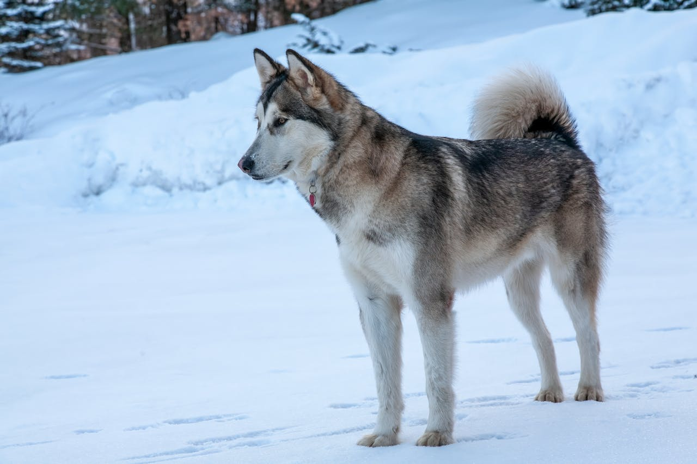

Malamut
Teljes nevén Alaszkai Malamut. Az alaszkai malamut a szibériai husky nagy testvére. Sokan összekeverik vele, de aki ismeri, az egészen más kutyának látja. Vaskosabb, erőteljesebb felépítésű, nehéz terhek hosszú utakon való húzására tenyésztették ki. Önérzetes kutya, saját akarattal bír. Ennek ellenére az amerikai hadsereg előszeretettel alkalmazta, és még hegyi mentő kutyákat is képeztek malamutokból. Szintén standardizált kutya, fenséges kisugárzásával a kiállítások királya.